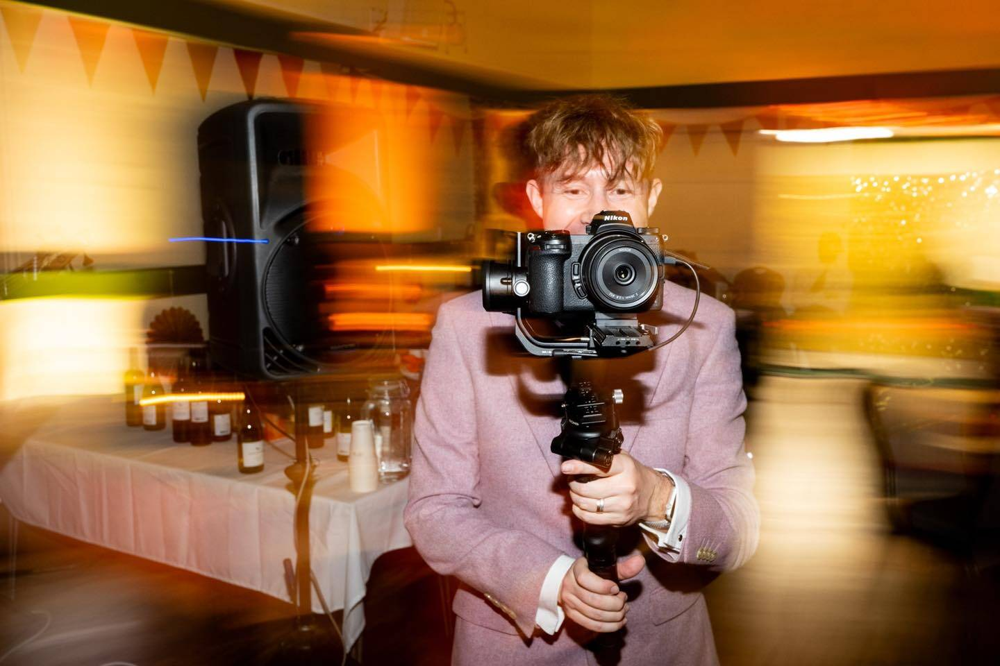

01
No assumptions
No guessing about names, roles, traditions or what your wedding “should” look like.
Meet the person behind Nimble
I’m an ADHD wedding photographer and videographer based in Dereham, Norfolk. I create warm, honest and properly-you photographs and films — without awkward posing, forced smiles or weird vibes.
You do not need to be confident in front of the camera. You just need to show up, enjoy your day and let me take care of the rest.

Why Nimble works
Traditional ways of working never really fitted me. I needed flexibility, wanted to build something that worked with my brain, and cared about creating an experience that felt comfortable for the people in front of my camera.
I genuinely hate having my own photograph taken, so I understand the overthinking, the awkwardness and the sudden feeling that you are expected to perform.
My approach is calm, friendly and low-pressure. I’ll offer gentle direction when it helps, step back when it doesn’t, and give you room to be yourselves.
No assumptions. No awkwardness.
Nimble is proudly queer-friendly and neurodivergent-friendly, while warmly welcoming every couple.
No guessing about names, roles, traditions or what your wedding “should” look like.
Honest information, straightforward planning and no last-minute surprises.
Helpful direction when you want it, without stiff poses or pressure to perform.
Family, friends and chosen family are all part of the story of your day.
Photography first, film later
Photography was where the journey began. I loved finding the real moments: the nerves before the ceremony, the sudden laughter, the quiet glances and the chaos on the dance floor.
Videography came later and added another layer. Movement, voices, music and atmosphere let couples step back into their wedding day in a completely different way.
Today I offer wedding photography and wedding videography as separate services, covering Norfolk, Suffolk and weddings across the UK.
Away from weddings
When I’m not photographing or filming a wedding, I’m usually watching a film, planning the next trip or heading somewhere with sea air.
A Norfolk photographer at heart
The Norfolk coast is one of my favourite places to wander with a camera. Happisburgh, Cromer and the changing light along the shoreline are a constant source of inspiration — and a reminder that the most memorable images rarely need to feel overproduced.
Let’s get Nimble
If you want photography or videography that feels natural, and someone who will keep everything relaxed from start to finish, I’d love to hear what you are planning. Coffee’s on me — or we can keep it easy and chat online.